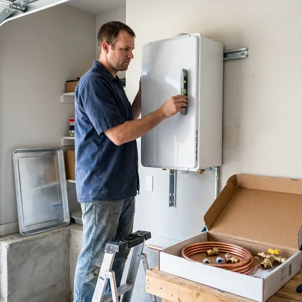

Electric Tankless Water Heater Installation in Lubbock, TX
Get endless hot water on demand with an electric tankless water heater installation from DFJ Plumbing in Lubbock, TX.
- Fast, Reliable Installation
- Expert Plumbers
- Energy Efficient
- Code Compliant

Your Go-To for Electric Tankless Water Heaters in Lubbock, TX.
Contact DFJ Plumbing for a free estimate and reliable service.
Expert Electric Tankless Water Heater Installation in Lubbock, TX
When you choose DFJ Plumbing for your electric tankless water heater installation in Lubbock, you're investing in efficiency and comfort. We handle everything from assessing your home's electrical capacity to selecting the right unit for your needs, ensuring a smooth transition to endless hot water.
Our expertise includes:
- Precise electrical load assessment for your home.
- Expert sizing and placement of tankless units.
- Ensuring all local plumbing and electrical codes are met.

Additional Plumbing Installation Services in Lubbock, TX
We install water heaters, pumps, lines, and fixtures across Lubbock, TX with careful, permitted work that passes inspection the first time.


Customers
Why Choose DFJ Plumbing for Electric Tankless Water Heater Installation in Lubbock, TX?
This efficiency can lead to lower utility bills and a smaller environmental footprint, making them a smart choice for many Lubbock properties.
- Energy Savings, Heat water only when you need it, cutting down on wasted energy and utility costs.
- Endless Hot Water, Never run out of hot water again, even with multiple showers or appliances running simultaneously.
- Space Saving, These compact units mount on a wall, freeing up valuable floor space in your garage or utility closet.
Citywide Coverage
DFJ Plumbing proudly serves every neighborhood in Lubbock for electric tankless water heater installation. Whether you're in the heart of the city or a surrounding community, our team is ready to provide prompt and professional service. We understand the specific plumbing needs across our diverse Texas region.
Experienced Team
Our team of plumbers has extensive experience with electric tankless water heater installation, specifically addressing the unique electrical demands and water conditions found in Texas. We stay updated on the latest technology and installation best practices. You can trust our technicians to perform the job right the first time.
Safety-First Approach
When installing an electric tankless water heater, proper electrical connections and circuit protection are critical. DFJ Plumbing adheres to the strictest safety standards and local building codes for every installation in Lubbock, providing you with peace of mind.
Trusted Certified Lubbock Plumbing Services Professionals
At DFJ Plumbing, we take pride in providing licensed, certified plumbing services throughout Lubbock, TX. Backed by leading industry credentials, our experienced plumbers combine technical skill with genuine customer care. Whether it is repair, installation, or maintenance, we follow strict safety and quality standards to deliver lasting results you can trust.
Call Us Now PHCC Plumbing Contractor Recognition
PHCC Plumbing Contractor Recognition Better Business Bureau (BBB) Accreditation
Better Business Bureau (BBB) Accreditation Angi Certified Pro
Angi Certified Pro ISO 9001 Quality Management Certification
ISO 9001 Quality Management CertificationDependable Electric Tankless Water Heater Installation Services in Lubbock, TX
Residential Electric Tankless Water Heater Installation in Lubbock
For homeowners in Lubbock, an electric tankless water heater means a continuous supply of hot water for bathing, washing dishes, and laundry. We help you choose the right size unit based on your household's peak hot water demand, ensuring you never run cold. Our service includes a full assessment of your current electrical panel capacity, as these units require dedicated high-amperage circuits. We work with leading brands like Rheem, Ecosmart, and Stiebel Eltron to provide reliable solutions tailored to your home's needs.

Electric Tankless Water Heater Upgrades in Lubbock, TX
Upgrading from a traditional tank water heater to an electric tankless model is a popular choice for Texas residents looking for efficiency. We manage the entire conversion process, including safe removal and disposal of your old tank. Our plumbers ensure all new electrical lines and plumbing connections are correctly installed, meeting all local codes. This upgrade often frees up significant space and can enhance your home's energy performance, a valuable benefit in the Texas climate.
Rheem Electric Tankless Water Heater Installation in Lubbock
Rheem is a trusted name in water heating, offering a range of high-performance electric tankless models. DFJ Plumbing is proficient in installing various Rheem units, known for their durability and efficiency. We ensure your Rheem unit is perfectly sized and correctly wired to provide optimal hot water delivery. Our team handles everything from securing the unit to the wall to making sure all electrical and water lines are properly connected and leak-free.
Ecosmart Electric Tankless Water Heater Installation in Lubbock, TX
Ecosmart electric tankless water heaters are popular for their smart technology and energy-saving features. DFJ Plumbing provides expert installation of Ecosmart units across Lubbock, TX. We confirm your home's electrical infrastructure can support the unit's requirements, ensuring safe and efficient operation. Our installation process guarantees that you'll get the maximum performance and energy efficiency out of your new Ecosmart water heater, helping you save on utility bills year-round.
Commercial Electric Tankless Water Heater Installation in Lubbock
Businesses in Lubbock can also benefit from the efficiency and space-saving advantages of electric tankless water heaters. We install commercial-grade units for various applications, from restaurants to offices, providing hot water on demand without the need for large storage tanks. Our commercial installations are designed to meet the higher demands of business operations, ensuring reliable hot water for your employees and customers while adhering to all commercial building codes and safety regulations.
Emergency Electric Tankless Water Heater Replacement in Lubbock, TX
If your old water heater unexpectedly fails and you need a fast replacement, DFJ Plumbing offers emergency electric tankless water heater installation services in Lubbock, TX. We understand the urgency of restoring hot water to your home or business. Our team can quickly assess your needs, recommend a suitable electric tankless unit, and perform the installation with minimal disruption. We prioritize rapid response to get your hot water flowing again.
Electric Tankless Water Heater Sizing and Selection in Lubbock
Choosing the right electric tankless water heater size is crucial for performance. In Lubbock, factors like groundwater temperature and your household's simultaneous hot water usage determine the ideal GPM (gallons per minute) output required. DFJ Plumbing provides expert consultation to help you select a unit that perfectly matches your demand, preventing cold showers and ensuring efficiency. We consider your home's specific plumbing layout and electrical panel capacity to recommend the best model.

Cost Comparison: Electric Tankless vs. Traditional in Lubbock, TX
Many Lubbock, TX homeowners wonder about the long-term costs of electric tankless versus traditional tank water heaters. While the initial installation cost for an electric tankless unit can be higher due to electrical upgrades, the energy savings over its lifespan often make it a more economical choice. Our team can provide a detailed breakdown of potential savings, helping you make an informed decision for your specific budget and hot water needs.
Electric Tankless Water Heater Installation Near Me in Lubbock, TX
If you're searching for 'electric tankless water heater installation near me' in Lubbock, TX, look no further than DFJ Plumbing. Our local plumbers are familiar with the area's specific water conditions and building standards, ensuring a tailored and effective installation. We're committed to providing prompt and reliable service to our community.
DFJ Plumbing is your trusted local provider for electric tankless water heater installation. We pride ourselves on quick response times and expert service across Lubbock. When you choose us, you're getting a team that understands the unique needs of Texas homes and is dedicated to your satisfaction.
DFJ Plumbing at a Glance
- Licensed and insured plumbers serving Lubbock, TX
- 24/7 emergency service with same-day scheduling
- Clear written estimates, no hidden fees
- 4.9-star rated by 812+ Texas customers
Lubbock Map
Lubbock Information
- Population
- 266,878
- Area codes
- 806/682/432
- Service area
- Lubbock and communities within 40 miles
- Nearby
- Midland, Amarillo, Odessa, Abilene
Installing an electric tankless water heater in Lubbock, TX is a smart move for energy efficiency, especially with our long warm seasons and higher energy demands for cooling.
Expert Services
Trust our professionals for reliable DFJ Plumbing solutions in Lubbock, TX.
Our Specialized Plumbing Services in Lubbock, TX
At DFJ Plumbing, we provide a complete range of plumbing services across Lubbock, TX. From leak detection to full system installations, our team ensures fast, precise, and affordable service for both residential and commercial properties. Explore our core services below:


How Our Electric Tankless Water Heater Installation Process Works in Lubbock, TX
We ensure a smooth and professional installation of your new electric tankless water heater from start to finish.
Request a Quote
Contact us at (737) 405-5978 to schedule a consultation. We'll discuss your hot water needs and assess your home's electrical and plumbing systems.
Site Assessment
Our plumber will visit your Lubbock home to confirm electrical capacity, water pressure, and determine the best location for your new unit. We'll recommend the ideal electric tankless model for your household.
Professional Installation
We handle the entire installation, including any necessary electrical upgrades, plumbing connections, and testing. Our team ensures your new unit is working perfectly and adheres to all local codes.
Frequently Asked Questions About Electric Tankless Water Heater Installation in Lubbock
The cost for electric tankless water heater installation in Lubbock, TX typically ranges from $2,500 to $6,000. This price includes the unit itself, which can be $600 to $2,000 or more, plus labor, and any necessary electrical upgrades to your panel or wiring. A detailed quote will be provided after a site assessment.
Most electric tankless water heater installations can be completed within a single day, typically 4 to 8 hours. However, if significant electrical panel upgrades or extensive re-piping are required, the process may extend into a second day. We aim to minimize disruption and restore your hot water as quickly as possible.
Yes, in Lubbock and most of Texas, permits are typically required for electric tankless water heater installation, especially due to the electrical work involved. DFJ Plumbing handles all necessary permit applications and ensures that the installation passes all required inspections, guaranteeing compliance with local building codes.
Installing an electric tankless water heater is a complex job involving high-voltage electricity and plumbing, making it unsuitable for DIY. Incorrect installation can lead to electrical hazards, water damage, and voided warranties. It's always best to hire a licensed and experienced plumber like DFJ Plumbing for safe and proper installation.
DFJ Plumbing installs a variety of reputable electric tankless water heater brands, including Rheem, Ecosmart, Stiebel Eltron, Bosch, and Noritz. We can help you choose the best brand and model that fits your budget and hot water demands, ensuring a quality and efficient solution for your home.
Texas is known for its hard water, which can lead to mineral buildup (scale) inside electric tankless water heaters. This can reduce efficiency and lifespan. Regular flushing and descaling, often recommended annually, are crucial maintenance steps to combat hard water effects and keep your unit running optimally.
Yes, electric tankless water heaters typically require dedicated high-amperage circuits, often 200 amps or more, depending on the unit's size and your home's hot water demand. Many older Lubbock, TX homes may need an electrical panel upgrade to accommodate these requirements. Our plumbers will assess your current electrical system during the consultation.
In Texas, electric tankless water heaters offer endless hot water, significant energy savings by heating only on demand, and a compact size that saves valuable space. They also avoid standby heat loss, which is particularly beneficial in our warmer climate, contributing to lower utility bills year-round.
What People Are Saying About Our Plumbing Experts?

Emily R.
I called DFJ Plumbing for plumbing repair, and the technician was fast, polite, and thorough. They explained the problem clearly and fixed it the same day. I will definitely hire them again. Highly recommended!
Plumbing Repair · San Angelo, TX
Patricia H.
We had a slab leak that two other companies could not find. DFJ Plumbing located it in under an hour, explained our options, and the price matched the quote to the dollar.
Slab Leak Repair · Lubbock, TX
Robert G.
The trenchless sewer replacement saved our front yard. They walked us through the camera inspection footage first so we knew exactly what we were paying for.
Sewer Line Replacement · Amarillo, TX
Mark T.
When our office needed drain cleaning, DFJ Plumbing provided quick, reliable service. The plumber arrived on time and made sure every drain flowed perfectly before leaving. Very satisfied.
Drain Cleaning · Odessa, TX
Daniel K.
A pipe burst at 11 pm and they actually answered. The plumber showed up within the hour, shut everything down, and had us back to normal the next morning. Could not ask for more.
Emergency Plumbing · San Angelo, TX
Laura S.
I scheduled a water heater replacement, and the team made the process smooth and affordable. The new unit works perfectly, and they cleaned up after completing the job.
Water Heater Replacement · Abilene, TX